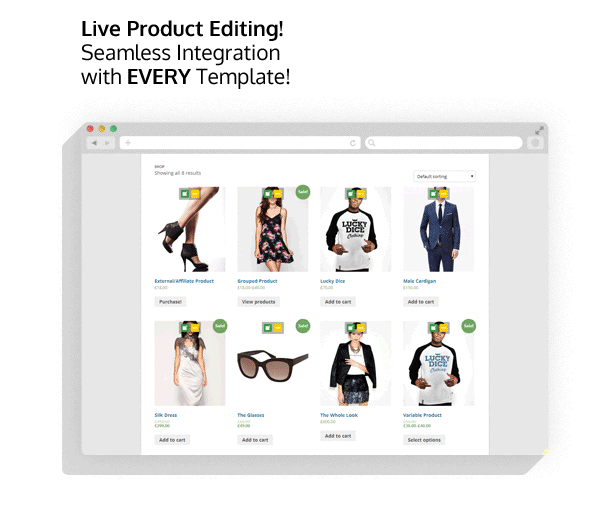

1. Meet WooCommerce Frontend Shop Manager for Wordpress
Provided information in this section and the documentation will help you understand your new plugin, and get the most out of it. Please read full documentation on this plugin in order to use it properly.
1.1 Features
The ultimate tool for managing WooCommerce shops, right at the frontend, featuring live product editing! It has never been this easy to manage a professional online store! WooCommerce Frontend Shop Manager integrates itself all over your shops frontend and adds the live editing product functionality. It supports product archives, single products, and even the shortcodes! All Wordpress templates are supported by default. This tool will improve your shop, and will save you a lot of time spent on managing your products. Well, WooCommerce just got better! Get up to 50% more time for you life! Check the demo at this link.
Frontend Shop Editing for WooCommerce
Now you can easily edit your products from your shops frontend thanks to the WooCommerce Frontend Shop Manager plugin. Change prices, manage stock, even add taxonomy terms, categories and attributes or just add some new images to the product gallery. All live editing, directly from the site archives, single product pages, or even shortcodes. Works with EVERY template! Guaranteed!
Product editing for tablets, handheld, phone and small screen devices!
Editing products from the backend using a tablet or a phone is complicated. WooCommerce Frontend Shop Manager improves the product editing experience on these devices dramatically. The easiest product managing on the iPhone and iPad. Full support and quick controls right at your fingertips!
Easy WooCommerce Integration
Plugin has no settings! It integrates itself in your shop automatically. Every user that has a role to manage the store will have the access to it just like he has to the product editing screen, only now on the frontend. The WooCommerce Frontend Shop Manager icons will appear on all possible products. On click the manager starts and the editing can start! Quickly and easily!
Supported WooCommerce Product Settings
These options are already integrated. WooCommerce Frontend Shop Manager updates and bug fixes are free for a lifetime! New options will be added in the updates.
- Simple, Variable, External/Affiliate Products Support!
- Product Name
- Product Featured Image
- Product Gallery
- Prices, Sale Prices
- Schedule Sales
- Stock Management
- Product Grouping
- Product Categories, Tags
- Categories, Tags New Term Creation
- Product Attributes
- New Attribute and New Attribute Term Creation
- Variable Products
- Variable Featured Images
- Variable Prices, Sale Prices
- Variable Schedule Sale
- Variable Stock Management
- External/Affiliate Links
Do you need more features for the WooCommerce Frontend Shop Manager?
Post your wanted features in the item comments! The goal is to implement all the WooCommerce product settings in the live manager, but lets do the important ones first!
1.2 Plugin Author and Support
WooCommerce Frontend Shop Manager for Wordpress was developed by Mihajlovicnenad.com. For support related questions please visit our item page on codecanyon.com.
2. Plugin Install
Provided information in this section covers the plugin installation.
2.1 Installation
To install this plugin you must have a working version of WordPress and WooCommerce plugin already installed. For information on installing the WordPress platform, please see the WordPress Codex - http://codex.wordpress.org/Installing_WordPress. Upon downloading the WooCommerce Frontend Shop Manager archive, extract the archive and inside you will find full contents of your purchase. In the main archive you will find woocommerce-frontend-shop-manager.zip file archive that contains the installable plugin files.
Please Note: You can install the plugin in two ways: inside WordPress, or via FTP. If you have trouble installing the theme inside WordPress, please proceed with installing it via FTP and you will be able to get around the issue
Installing from WordPress
Follow the steps below to install inside Wordpress
- Navigate to Appearance > Plugins
- Click Install Plugins and then Upload
- Navigate to woocommerce-frontend-shop-manager.zip on your computer and click Install Now
- To activate the newly installed plugin navigate to Appearance > Plugins select the WooCommerce Frontend Shop Manager and press Activate
- After install, activate the plugin and check your new WooCommerce Frontend Shop Manager!
Installing via FTP Server
Follow the steps below to install via FTP
- Unzip woocommerce-frontend-shop-manager.zip to a desired location on your HDD. These extracted files will be uploaded later via FTP
- Connect to your server via FTP
- Navigate to /wp-content/plugins/ on server
- Navigate to location of unzipped woocommerce-frontend-shop-manager.zip
- Upload local folder /cooltimeline/ to remote /wp-content/plugins/
- To activate the newly installed plugin navigate to Appearance > Plugins select the WooCommerce Frontend Shop Manager and press Activate
- After install, activate the plugin and check your new WooCommerce Frontend Shop Manager!
3. How to use?
Provided information in this section covers the WooCommerce Frontend Shop Manager basic features and use.
3.1 Using the WooCommerce Frontend Shop Manager
WooCommerce Frontend Shop Manager is a simple plugin that will automatically integrate itself in the WooCommerce interface. The icons will appear all over your products, in the product archives, single products and even the shortcodes. Simply click the edit icon to access the editor.
4. Support
Provided information in this section covers the WooCommerce Frontend Shop Manager support service.
4.1 Plugin Support
WooCommerce Frontend Shop Manager for Wordpress was developed by Mihajlovicnenad.com. For support related questions please visit our item page on codecanyon.com.
Thank you for purchasing WooCommerce Frontend Shop Manager! Have fun! Mihajlovicnenad.com